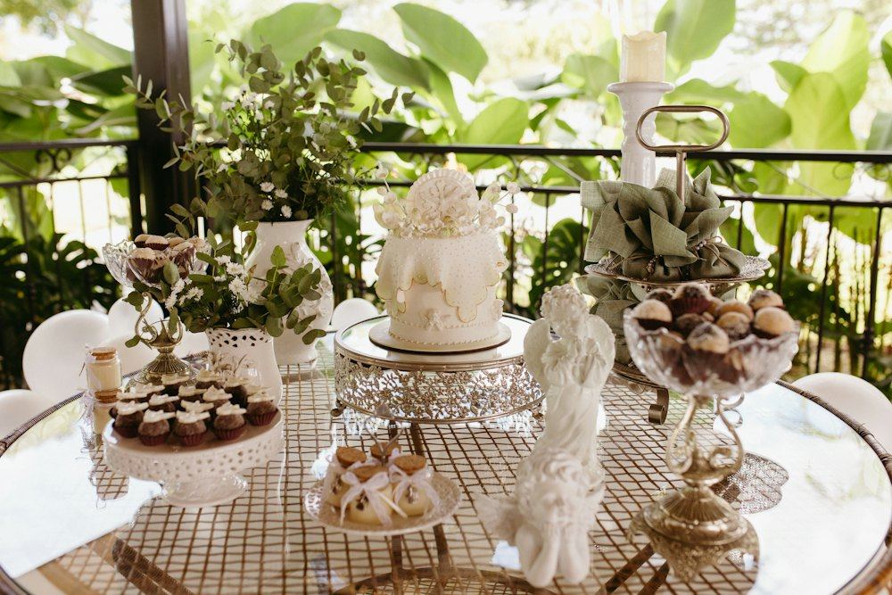
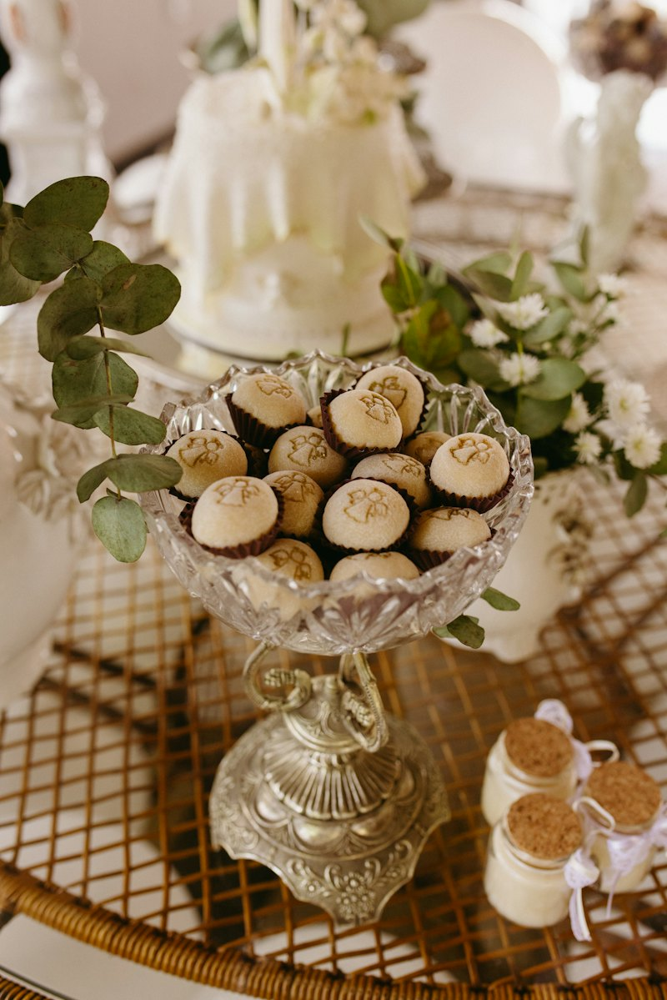
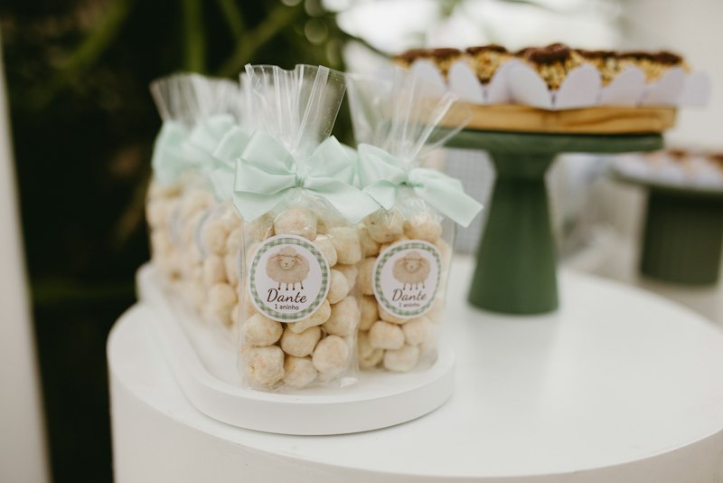

Ficha de encomenda
Preencha como se fosse no caderno do ateliê. A ficha calcula uma quantidade de referência para a sua festa e já vai prontinha para o WhatsApp da Fátima.
Sabores, cores da fita e embalagem vocês combinam direto com ela.
quanto antes encomendar, melhor pra garantir a data!O que sai do ateliê
Bem-casados
Massa fofinha e recheio cremoso, embalados no papel e na fita da cor do casamento, com tag dos noivos.
Doces finos
Trufas, camafeus e bombons feitos à mão, nas forminhas que combinam com a mesa.
Lembrancinhas
Caixinhas e saquinhos com fita para padrinhos e convidados levarem para casa.
Brindes para empresas
Doces embalados para clientes, eventos e fim de ano.



Fotos ilustrativas. No site final entram as fotos dos doces da Fátima.
Como encomendar
Do primeiro recado até os doces na mesa da festa.
- Mande a fichaData, tipo de festa e convidados, pela ficha acima ou direto no WhatsApp.
- Escolha sabores e embalagemA Fátima mostra as opções e monta o orçamento nas cores da festa.
- Receba os docesRetirada ou entrega, combinada direto com o ateliê.
Fale com o ateliê
- (19) 99002-7901
- Endereço
- R. da Imprensa, Limeira – SP, 13481-370
- Atendimento
- Segunda a sábado, das 9h às 18h
Perguntas frequentes
Com quanto tempo de antecedência devo encomendar?
Quanto antes, melhor, principalmente para casamentos e datas concorridas. Mande a data da festa no WhatsApp que a Fátima confirma se tem vaga.
Dá para escolher a cor da fita e da embalagem?
Sim. Papel, fita e tag são montados nas cores e no estilo da sua festa.
Quantos bem-casados eu preciso?
O mais comum é um por convidado, com uma pequena folga. A ficha de encomenda acima faz essa conta para você.
Qual o horário de atendimento?
De segunda a sábado, das 9h às 18h, pelo WhatsApp (19) 99002-7901.